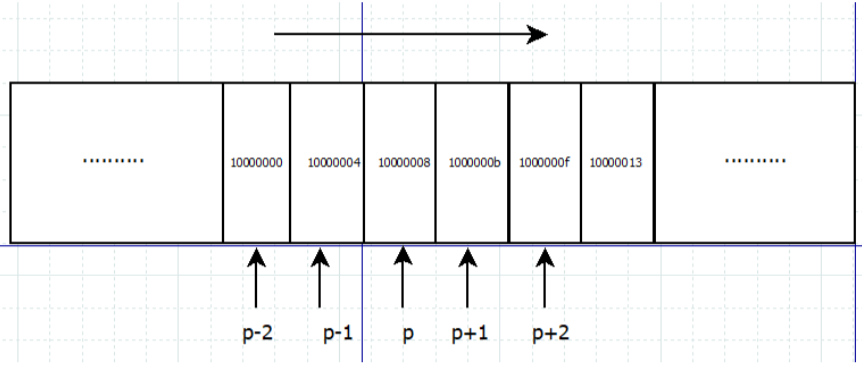

1、指针概念理解
int* p 定义一个指针（推荐使用这种写法int* ，理解上有好处）
p 指针变量；
* 间接运算符（访问符），代表访问该地址所指向的空间；
*p 指针所保存（指向）的地址中对应（指向）的值；
&p 获取指针变量的内存地址（指针本身占用内存空间）；
故 指针是
（1）通过间接的方式访问内存空间（直接方式是通过变量名称（内存空间名字）直接访问空间）；
（2）指针是一种保存变量内存地址的变量，自身也占用内存空间。
eg：
指针初始化的两种方式
int a = 40;
//指针初始化方式第一种写法
int* p;//p是指针变量，而不是*p
p = &a;//指针变量用来存放内存地址；注意，此处使用*p = &a是错误的定义，应该是对p（指针变量）赋值，而不是*p（指针保存的地址指向的值）
//指针初始化方式第二种写法，实质是第一种写法的简化方式。
int* p1 = &a;
cout << " &p--对指针变量取地址--输出指针变量的地址：" << &p << endl;
cout << " *p--该指针保存的地址对应的值--输出指针所存放的地址对应的在堆内存中的值：" << *p << "\n";
2、声明指向int类型的指针，即指针包含的地址对应的内存单元存储了一个整数
int* p = NULL;
3、使用 指针 存储 由地址运算符& 获取的地址
int age = 30;
int* pa = &age;
cout << "*pa = " << *pa << endl;
cout << "pa = " << pa << endl; //age的内存地址
cout << "&age = " << &age << endl;
cout << "指针自身的地址----&pa = " << &pa << endl; //指针自身的地址
4、const指针int day = 30;
int* const pDay = &day; //指针包含的地址是常量---常量指针
cout << pDay << endl;
int hour = 24;
const int* pHour = &hour; //指针指向的数据是常量---指向常量的指针
cout << pHour << endl;
int h = 24;
const int* const ph = &h; //指针包含的地址以及指向的值都是常量---指向常量的常量指针
cout << ph << endl;
5、 声明指向内存块的指针，即void指针
void 指针是一种特殊的指针，表示为“无类型指针”，由于 void 指针没有特定的类型，因此它可以指向任何类型的数据。也就是说，任何类型的指针都可以直接赋值给 void 指针，而无需进行其他相关的强制类型转换。
eg:
void* p1;
int* p2;
p1 = p2;
p2 = (int* )p1;
6、野指针：
把没有合法指向的指针称为“野”指针。因为“野”指针随机指向一块空间，该空间中存储的可能是其他程序的数据甚至是系统数据，故不能对“野”指针所指向的空间进行存取操作，否则轻者会引起程序崩溃，严重的可能导致整个系统崩溃。
eg：
int *pi,a; //pi未初始化，无合法指向，为“野”指针
*pi=3; //运行时错误！不能对”野”指针指向的空间做存入操作。该语句试图把 3 存入“野”指针pi所指的随机空间中，会产生运行时错误。
a=*pi; //运行时错误！不能对”野”指针指向的空间取操作。该语句试图从“野”指针pi所指的空间中取出数据，然后赋给变量a同样会产生运行时错误。
7、指针运算
eg:
int* p = 4;
p++;

指针变量 p 进行 p++，p 是一个 int 类型的指针，指向内存地址 0x10000008 处。则 p++ 将指向与 p 相邻的下一个内存地址，由于 int 型数据占 4 个字节，因此 p++ 所指的内存地址为 1000000b。这种运算并不会改变指针变量 p 自身的地址，只是改变了它所指向的地址（存放的地址）。
8、补充：
c++指针内存空间释放int* pb = new int;
int* pb2 = new int[4];
delete pb;
delete[] pb2; 9、数组与指针：
（1）一维数组和指针
int* p,a[10] = {1,2,3,4,5};
p = a;//p指向数组a的首地址，即p=&a[0],数组名相当于数组首元素的地址a[0]
//数组的访问方式
//1、直接访问---数组名[下标]
cout << a[1] << "\n";
//2、间接访问---*(数组名+i)
cout << *(a+2) << endl;// a+2表示数组首地址向后移动2个位置，a+2相当于&a[2]
//3、间接访问--- *（指针变量）
for (int i=0; i<10; i++) {
cout << * p++ << endl;//++运算符的优先级要高于*
}
指针数组：存储指针的数组，int* p[5]int a0,a1,a2,a3;
int* b[5];
b[0] = &a0;
b[1] = &a1;
b[2] = &a2;
数组指针：指向一维数组的指针,int (*p)[5]
int c[3][4]; int (*p)[4];//定义一个数组指针，指向含4个元素的一维数组 p = c;//二维数组的首地址赋给p，即a[0],或&a[0][0]
（2）二维数组
int* p;
int a[3][4] = {{1,2,3,4},{5,6,7,8},{9,10,11,12}};
p = &a[0][0];
//通过数组下边直接访问
/*
* 通过地址间接访问，即*(*(a+i)j)的形式，二维数组可看成由特殊一维数组组成的一维数组，a[i]可看成一个由N列组成的一维数组， a表示a[0][0]的地址
* a[i]等价于*(a+i),表示i的首行地址，i行对应的一维数组的数组名。
* a[i]+0 <---> *(a+i)+0 <---> &a[i][0]
* a[i]+j <---> *(a+i)+j <---> &a[i][j]
* 地址即指针，通过间接运算符*,可以访问内存空间，则
* *(a[i]+j) <---> *(*(a+i)+j) <---> *&a[i][j] <---> a[i][j]
*/
cout << "a[0][0]的地址：" << a << endl;
cout << "a[0][1]的地址：" << a+1 << endl;
cout << "a[1][0]的地址：" << a[1]+0 << endl;
cout << *(a+1)+0 << endl;
cout << &a[1][0] << endl;
10、函数与指针：
（1）指针函数，函数返回调用者某个地址即指针类型;
char* str_cat(char* c1, char* c2){
char* p1 = c1;
char* p2 = c2;
while (*p1!='\0'){
p1++;
}
*p1++=' ';
while (*p2!='\0'){
*p1++=*p2++;
}
return c1;//返回结果为指针类型}（2）函数指针---指向函数的指针
int* pf (int, int);//函数的返回值为int指针类型，int* int (*pf1) (int, int);//函数指针变量pf，可以指向任意含有两个整形参数，且返回值为整形的函数 pf = &fun; pf = fun;//可以不用取地址，一个函数标识符就代表了它的地址
调用函数指针的方式两种方式
x = (*func)();
x = func();
非常感谢您的阅读，如需转载，请注明出处，本文链接https://www.cnblogs.com/huyangshu-fs/p/11617216.html